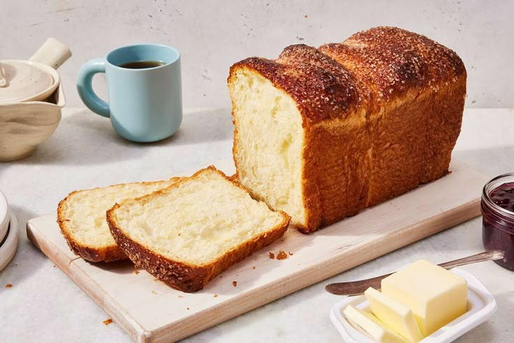
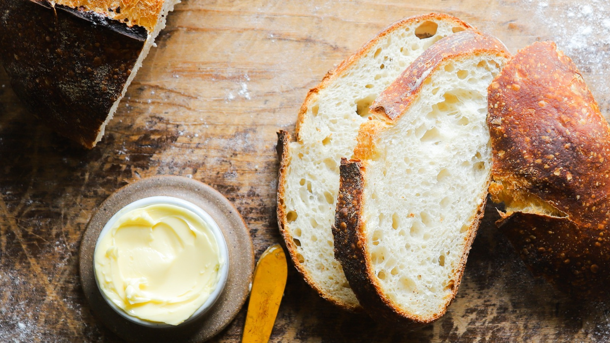
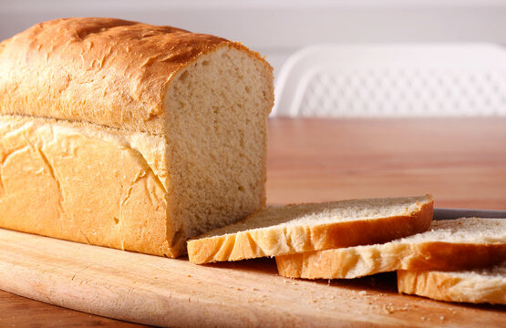

Where Wild Yeast Meets Craft
Heirloom starters, organic stone-ground flours, and artisan tools — nurtured for bakers who demand the perfect crust.

Starters Shared
Partner Farms
Organic Grains
Customer Rating
Baker's Favorites

San Francisco '68 Starter
55-year-old heirloom culture
Organic Flour Sampler
4 heritage grains

Artisan Baking Bundle
Complete tool kit
The Journey of the Loaf
Crafting true artisan sourdough is a slow, tactile art. By respecting time and temperature, we guide simple, organic ingredients into complex, nourishing loaves.
I. Mixing & Autolyse
Organic flour and water are combined to rest, allowing natural enzymes to activate and gluten strands to align before the starter is introduced.
II. Long Fermentation
A slow bulk fermentation with gentle stretch-and-folds builds air pockets, unlocking the deep flavor and easy digestibility of natural sourdough.
III. Scoring & Bake
Each loaf is hand-scored to control its expansion, then baked on a hot hearth with steam for a blistered, golden-brown caramelized crust.
Supporting Bakers from Hearth to Table
Since 2019, we've been the trusted source for professional bakeries, restaurants, and home bakers seeking the highest quality starters, flours, and tools. Our wholesale program offers volume pricing, custom starter cultivation, and dedicated support.
- Wholesale pricing for bakeries & cafes
- Custom starter development for your brand
- Bulk flour & tool orders with fast shipping

Join the Bread Club
Monthly curated boxes featuring rare starters, seasonal flours, and exclusive recipes. Cancel anytime.